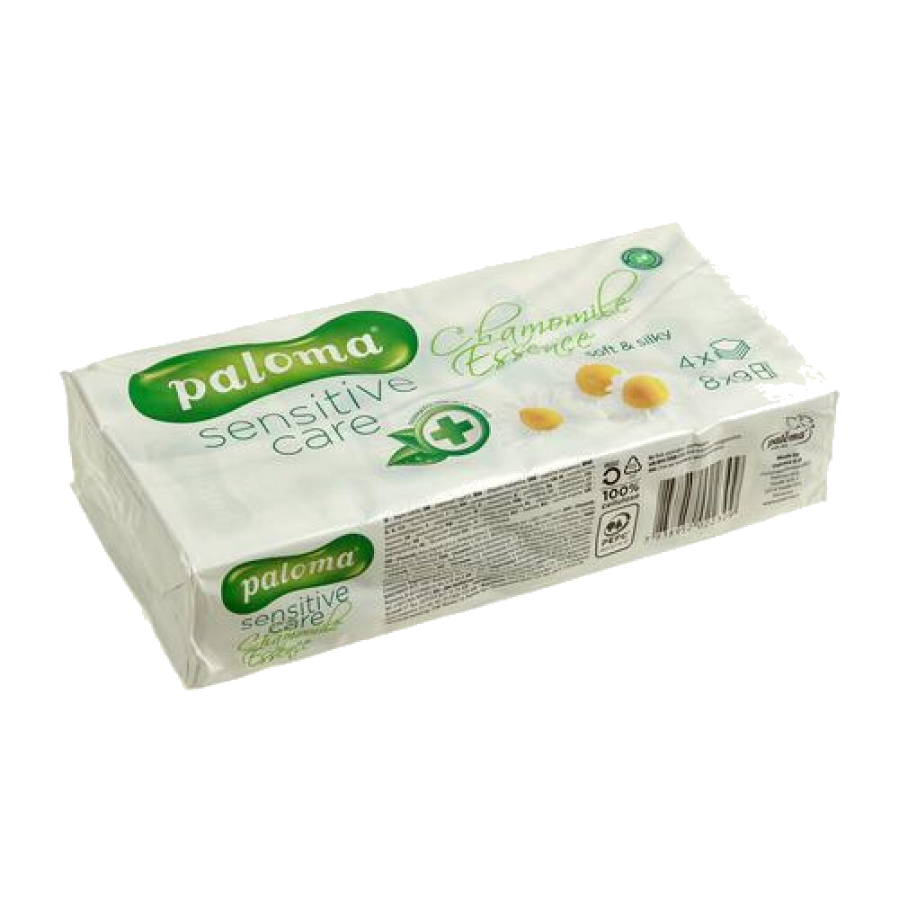

<link rel="stylesheet" href="../css/post.css">

<section class="tissue-rating">
    
    <p>The basic tissues you can find in the Bulgarian supermarkets and which you have used since you were a kid. Probably on discount.</p>
    <p>3-plied, soft enough and nostalgic. They remind you of that one school trip to Vitosha. <span class="rating">8/10</span></p>
</section>

<section class="tissue-rating">
    
    <p>Adorable, will make you want to buy all of them. Then you get embarrassed when your colleague asks you for a tissue and you have to take them out.</p>
    <p>No matter what the actual quality of the tissues is, you're content because of the package. <span class="rating">7.5/10</span></p>
</section>

<section class="tissue-rating">
    
    <p>They smell amazing when I use them to blow my nose, I almost forget the suffering of the common flu. For a moment it's spring again.</p>
    <p>Soft and smell flowery. I like them. <span class="rating">8.5/10</span></p>
</section>

<section class="tissue-rating">
    
    <p>These are "deluxe" tissues, almost the most expensive ones out there. They're ok but I don't like the aura or superiority.</p>
    <p>Meh. <span class="rating">7/10</span></p>
</section>